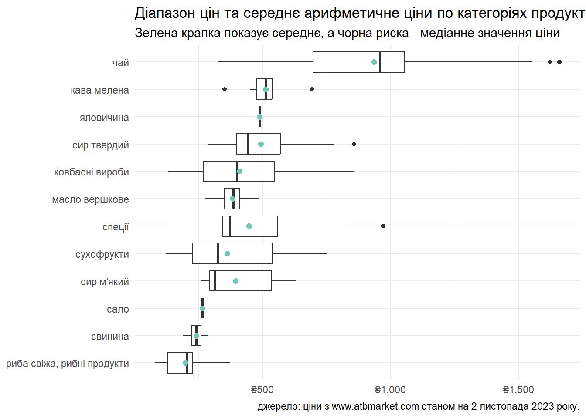

| Норми річного споживання харчів | |
| для працездатної особи на рік, у кілограмах/ літрах | |
| Продукт1 | Норма споживання |
|---|---|
| картопля | 95.0 |
| хліб житній | 39.0 |
| птиця | 14.0 |
| борошно пшеничне | 9.4 |
| свинина | 8.0 |
| сметана | 5.0 |
| сир твердий | 3.5 |
| маргарин | 2.0 |
| пшоняна крупа | 1.0 |
| спеції | 0.3 |
| Джерело: Постанова Кабінету Міністрів № 780 від 11.10.2016 | |
| 1 Тут наведені деякі приклади продуктів, всього їх майже 50. | |
Чи забезпечує прожитковий мінімум в Україні мінімальні стандарти життя
Як вираховується прожитковий мінімум
Прожитковий мінімум в Україні з 1 січня 2023 офіційно становить 2,684 гривні на місяць для працездатної особи. Передбачається, що на ці гроші працездатна людина може забезпечети себе мінімальним набором харчів, непродовольчих товарів та послуг (таких як опалення, транспорт та електроенергія). Розмір прожиткового мінімуму прямо виводиться з вартості споживчого кошика.
Конкретний перелік складових споживчого кошика та норми споживання визначені Постановою Кабінету Міністрів1 , а спосіб розрахунку вартості споживчого кошика — окремою Методикою2.
Зокрема, вартість набору продуктів харчування визначається як сума вартостей споживання кожного продукту. Згідно з Методикою, ціни розраховуються Держстатом — беруться середні споживчі ціни на окремий продукт на рівні області/ всієї України. А місячна вартість споживчого кошика і, відповідно, місячний прожитковий мінімум — як одна дванадцята річної вартості споживчого кошика у поточних цінах.
Вартість харчового набору за актуальними цінами АТБ
Порахуємо вартість харчового набору зі споживчого кошика за актуальними цінами з веб-сайту мережі супермаркетів «АТБ-Маркет». Відповідно до згаданої Методики, для початку потрібно порахувати середнє арифметичне ціни визначених категорій продуктів.

Для стислості у наведеному графіку показані категорії продуктів з середньою ціною більше 180 грн/ кг. Найбільший діапазон цін (інтервал між найдешевшим та найдорожчим товаром) мають продукти категорії «чай», «ковбасні вироби» та «спеції». Найбільший асортимент — «ковбасні вироби» (43 товари), «чай» (32) та «молоко» (25). З іншого боку, від початку спостережень «яловичина», «буряки» та «оселедці» представлені, в середньому, всього одним товаром на веб-сайті мережі.
Множачи середнє арифметичне ціни продуктової категорії на затверджені норми споживання, отримуємо такі значення вартості харчового набору за місяць:
| Фактичні витрати на продукти харчового набору | |||||||
| За середньомісячними цінами мережі супермаркетів АТБ | |||||||
| Категорія продуктів | Річні норми споживання1 |
Витрати у вересені | Витрати у жовтні | ||||
|---|---|---|---|---|---|---|---|
| Середня ціна |
Витрати | Продуктів у категорії |
Середня ціна |
Витрати | Продуктів у категорії |
||
| яловичина | 16.0 | 460.5 | 614.0 | 1 | 467.8 | 623.7 | 1 |
| сир м'який | 10.0 | 435.5 | 362.9 | 10 | 413.7 | 344.8 | 9 |
| фрукти, ягоди свіжі | 60.0 | 66.0 | 330.0 | 20 | 64.2 | 321.0 | 22 |
| ковбасні вироби | 9.0 | 380.7 | 285.5 | 39 | 402.1 | 301.6 | 45 |
| хліб пшеничний | 62.0 | 45.9 | 237.1 | 23 | 45.7 | 236.1 | 23 |
| молоко | 60.0 | 42.4 | 212.0 | 23 | 43.4 | 217.0 | 26 |
| кефір | 55.0 | 45.3 | 207.6 | 16 | 46.0 | 210.8 | 16 |
| кондитерські вироби | 13.0 | 182.9 | 198.1 | 18 | 172.6 | 187.0 | 20 |
| хліб житній | 39.0 | 54.8 | 178.1 | 1 | 54.8 | 178.1 | 1 |
| свинина | 8.0 | 245.1 | 163.4 | 6 | 237.9 | 158.6 | 5 |
| масло вершкове | 5.0 | 360.8 | 150.3 | 16 | 365.7 | 152.4 | 18 |
| птиця | 14.0 | 125.5 | 146.4 | 6 | 128.9 | 150.4 | 7 |
| сир твердий | 3.5 | 476.8 | 139.1 | 21 | 479.9 | 140.0 | 19 |
| риба свіжа, рибні продукти | 7.0 | 209.3 | 122.1 | 5 | 197.9 | 115.4 | 9 |
| сухофрукти | 4.0 | 355.2 | 118.4 | 17 | 357.1 | 119.0 | 18 |
| цукор | 24.0 | 52.0 | 104.0 | 3 | 52.0 | 104.0 | 3 |
| яйця | 220.0 | 5.0 | 91.7 | 7 | 5.3 | 97.2 | 7 |
| картопля | 95.0 | 10.5 | 83.1 | 2 | 15.7 | 124.3 | 4 |
| інші сезонні овочі | 26.0 | 34.9 | 75.6 | 6 | 55.5 | 120.2 | 6 |
| капуста | 28.0 | 24.6 | 57.4 | 2 | 22.5 | 52.5 | 2 |
| оселедеці | 4.0 | 151.2 | 50.4 | 1 | 151.2 | 50.4 | 1 |
| сметана | 5.0 | 115.6 | 48.2 | 20 | 121.4 | 50.6 | 21 |
| помідори | 12.5 | 43.9 | 45.7 | 3 | 67.1 | 69.9 | 3 |
| сало | 2.0 | 251.8 | 42.0 | 1 | 265.4 | 44.2 | 1 |
| олія соняшникова | 7.1 | 66.1 | 39.1 | 21 | 64.2 | 38.0 | 21 |
| субпродукти | 4.0 | 98.8 | 32.9 | 2 | 108.6 | 36.2 | 1 |
| квашені овочі | 3.0 | 109.9 | 27.5 | 7 | 112.2 | 28.0 | 9 |
| огірки | 12.5 | 26.2 | 27.3 | 2 | 59.0 | 61.5 | 2 |
| чай | 0.4 | 798.5 | 26.6 | 33 | 872.0 | 29.1 | 33 |
| ряжанка | 5.0 | 57.7 | 24.0 | 2 | 56.3 | 23.5 | 3 |
| риба заморожена | 2.0 | 139.1 | 23.2 | 3 | 139.6 | 23.3 | 3 |
| кава мелена | 0.5 | 498.9 | 20.8 | 5 | 505.9 | 21.1 | 8 |
| маргарин | 2.0 | 103.0 | 17.2 | 3 | 104.4 | 17.4 | 2 |
| рисова крупа | 2.5 | 69.7 | 14.5 | 12 | 70.6 | 14.7 | 12 |
| спеції | 0.3 | 563.3 | 14.1 | 15 | 470.2 | 11.8 | 20 |
| борошно пшеничне | 9.4 | 17.4 | 13.6 | 7 | 17.5 | 13.7 | 7 |
| макаронні вироби | 4.0 | 38.9 | 13.0 | 2 | 40.6 | 13.5 | 2 |
| цибуля | 9.1 | 15.8 | 12.0 | 3 | 14.4 | 10.9 | 2 |
| бобові | 1.9 | 59.9 | 9.5 | 2 | 60.4 | 9.6 | 2 |
| часник | 0.9 | 118.3 | 8.9 | 1 | 120.0 | 9.0 | 1 |
| гречана крупа | 2.0 | 53.4 | 8.9 | 5 | 52.7 | 8.8 | 5 |
| морква | 9.0 | 11.7 | 8.8 | 2 | 10.3 | 7.7 | 2 |
| буряки | 9.0 | 9.1 | 6.8 | 1 | 8.3 | 6.2 | 1 |
| вівсяна крупа | 1.1 | 65.6 | 6.0 | 1 | 63.8 | 5.8 | 1 |
| сіль | 3.0 | 19.5 | 4.9 | 3 | 19.5 | 4.9 | 3 |
| пшоняна крупа | 1.0 | 26.0 | 2.2 | 1 | 22.9 | 1.9 | 1 |
| інші крупи | 0.5 | 12.6 | 0.5 | 2 | 12.3 | 0.5 | 2 |
| Вартість харчового набору | — | — | 4425.4 | — | — | 4566.3 | — |
| 1 У кілограмах або літрах, залежно від типу продукту. Яйця - у штуках | |||||||
Кілька пояснень до цієї таблиці: колонка «витрати» показує фактичну місячну вартість продуктів кожної категорії, порахованої відповідно до затвердженої норми місячного споживання (як 1/12 річних норм споживання). Колонка «продуктів у категорії» — технічна колонка, вона показує кількість товарів у категорії, доступних на веб-сайті мережі в середньому на місяць, з яких було розраховано середнє арифметичне ціни для цієї категорії. Видно, що по деяких категоріях продуктів доступний лише один товар: зокрема, звертає увагу «яловичина» з ціною більше 460 грн/кг, що є вищою за середньоринкову. Вищу ціну тут можна пояснити тим, що через веб-сайт продаються фасовані товари, готові до відправки споживачеві.
Відповідно до наведених розрахунків, витрати на харчовий набір за затвердженими нормами складають 4,425.5 грн у вересні і 4,566.3 грн у жовтні 2023 року. Таким чином, витрати лише на харчові продукти перевищують поточний прожитковий мінімум більш як на 65%. Ситуацію не змінить навіть те, якщо купувати найдешевші продукти в кожній категорії: місячні витрати на набори продуктів харчування становитимуть тоді 3,470.2 грн та 3587.3 грн у версні та жовтні відповідно — що є вищим за прожитковий мінімум приблизно на 30%.
Незважаючи на те, що для цього аналізу взяті ціни лише з однієї продовольчої мережі, «АТБ-Маркет» є найбільшою мережею продовольчих супермаркетів в Україні, що до того ж працює у ніші дискаунтерів, — тобто загалом націлена на нижчі ціни на продукти, ніж в середньому на ринку.
Висновок
Офіційний прожитковий мінімум в Україні не дозволяє забезпечити людину мінімальним стандартами життя, що декларуються державою. Більше того, цих грошей не вистачає навіть для купівлі продуктів харчування у визначених нормах за мінімальними цінами мережі дискаунтерів «АТБ-Маркет».
Footnotes
«Про затвердження наборів продуктів харчування, наборів непродовольчих товарів та наборів послуг для основних соціальних і демографічних груп населення»:
https://zakon.rada.gov.ua/laws/show/780-2016-%D0%BF↩︎«Про затвердження Методики визначення прожиткового мінімуму»
https://zakon.rada.gov.ua/laws/show/z0281-17↩︎